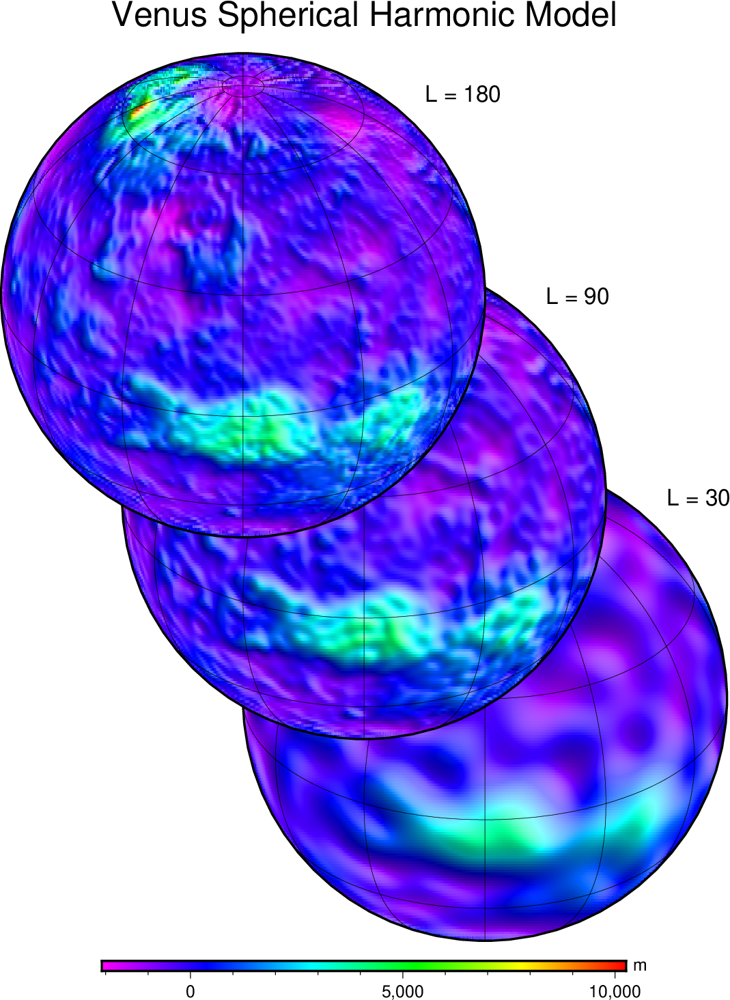

(39) Evaluation of spherical harmonics coefficients¶
We use a spherical harmonic model for the topography of Venus and evaluate the resulting global grid for three sets of upper order/degrees, here 30, 90, and 180; the original file (see below) goes to order and degree 720. We use the coefficients to evaluate the grids and make perspective globes of the different resolutions. The key tool used here is sph2grd.
Note that we use a special format in colorbar so that the annotations will include the separators for the thousands.
#!/usr/bin/env bash
# GMT EXAMPLE 39
#
# Purpose: Illustrate evaluation of spherical harmonic coefficients
# GMT modules: colorbar, text, makecpt, grdimage, sph2grd
# Unix progs: rm
#
gmt begin ex39
# Evaluate the first 180, 90, and 30 order/degrees of Venus spherical
# harmonics topography model, skipping the L = 0 term (radial mean).
# File truncated from http://www.ipgp.fr/~wieczor/SH/VenusTopo180.txt.zip
# Wieczorek, M. A., Gravity and topography of the terrestrial planets,
# Treatise on Geophysics, 10, 165-205, doi:10.1016/B978-044452748-6/00156-5, 2007
gmt sph2grd @VenusTopo180.txt -I1 -Rg -Ng -Gv1.nc -F1/1/25/30
gmt sph2grd @VenusTopo180.txt -I1 -Rg -Ng -Gv2.nc -F1/1/85/90
gmt sph2grd @VenusTopo180.txt -I1 -Rg -Ng -Gv3.nc -F1/1/170/180
gmt grd2cpt v3.nc -Crainbow -E
gmt grdimage v1.nc -I+a45+nt0.75 -JG90/30/5i -Bg -X3i -Y1.1i
echo 4 4.5 L = 30 | gmt text -R0/6/0/6 -Jx1i -Dj0.2i -F+f16p+jLM -N
gmt colorbar --FORMAT_FLOAT_MAP="%'g" -Dx1.25i/-0.2i+jTC+w5.5i/0.1i+h -Bxaf -By+lm
gmt grdimage v2.nc -I+a45+nt0.75 -JG -Bg -X-1.25i -Y1.9i
echo 4 4.5 L = 90 | gmt text -R0/6/0/6 -Jx1i -Dj0.2i -F+f16p+jLM -N
gmt grdimage v3.nc -I+a45+nt0.75 -JG -Bg -X-1.25i -Y1.9i
echo 4 4.5 L = 180 | gmt text -R0/6/0/6 -Jx1i -Dj0.2i -F+f16p+jLM -N
echo 3.75 5.4 Venus Spherical Harmonic Model | gmt text -F+f24p+jCM -N
rm -f v?.nc
gmt end

{kind=link}
Evaluation of spherical harmonics coefficients.